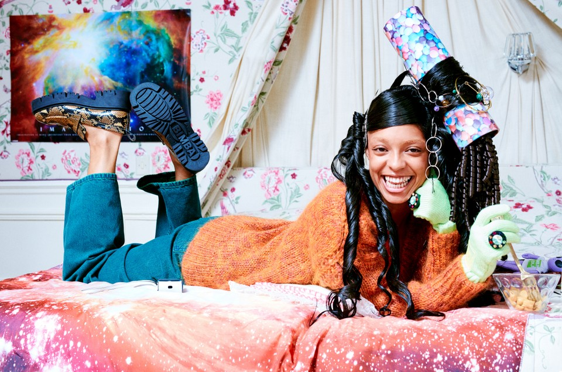
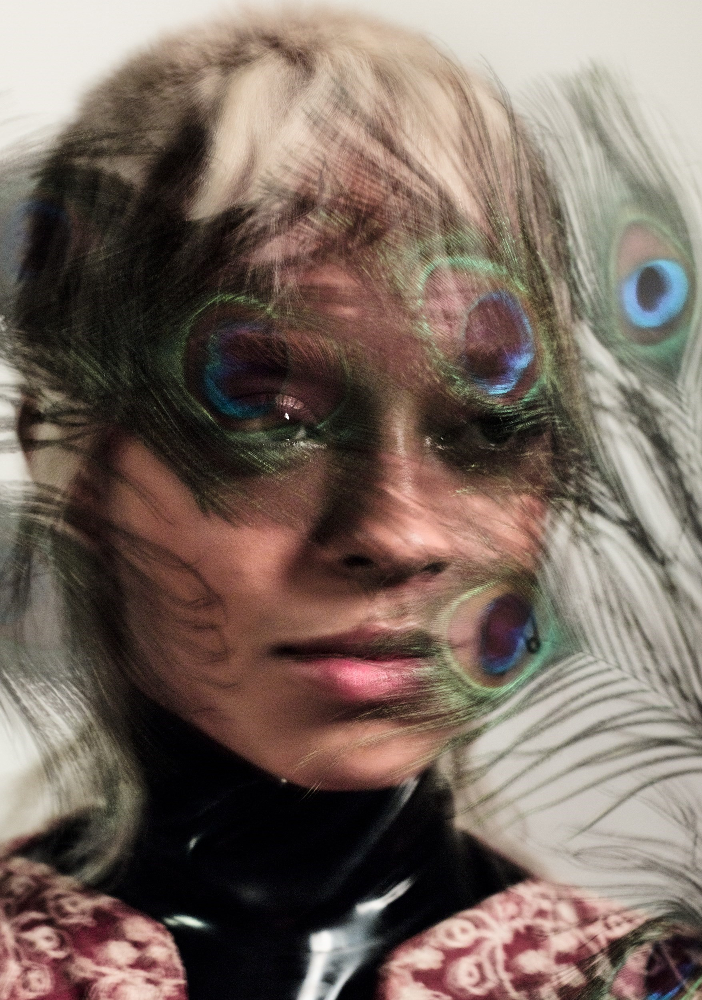

About Kelsey Lu



Kelsey Elizabeth McJunkins, known professionally as Kelsey Lu, is an American singer and cellist based in Los Angeles, California.

Lu began studying classical composition at age 6, learning piano, violin, and cello.
At age 18 Lu left home to attend the University of North Carolina School of the Arts on a full scholarship.
Following their first year, Lu dropped out and began making music.